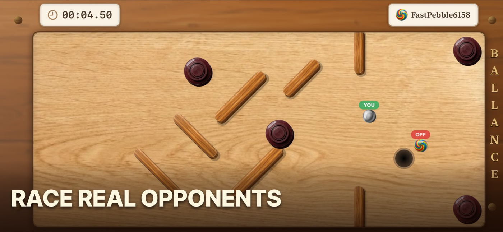
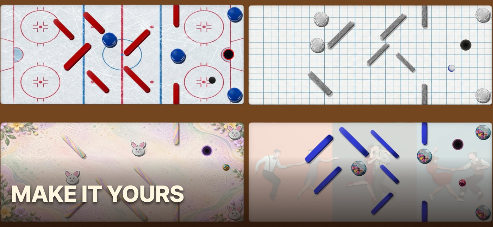

Motion controls that reward precision
Tilt your iPhone or iPad to steer. Gentle movement helps you hold a narrow line; a stronger tilt builds the speed needed for ramps and moving hazards. The direct control makes every save feel earned and every missed turn easy to understand.

A new challenge around every bend
Career Mode takes you through 88 levels of handcrafted challenges, with bumpers, moving belts, and propellers to read and outsmart. Time Attack and Endless Climb give fast runs a clear target, and daily and weekly Game Center leaderboards reward every improvement.
Play the way you want
- Career, Time Attack, and Endless Climb: learn the obstacles and improve your finish—offline, anywhere.
- Online multiplayer: race real opponents over the same course.
- Nearby local multiplayer: challenge a friend on the same network.
- Personal style: earn diamonds and unlock themes like Vintage Wood, Neon Arcade, and Galaxy Space, plus collectible ball styles.

An original mobile marble game
Ballance is an original game for iPhone and iPad created by independent developer Bahadir Sonmez. It is not affiliated with or related to an older PC title that may share a similar name.
Frequently asked questions
How do you control Ballance?
Tilt your device to guide the marble, manage its momentum, and line up each obstacle.
Can I play with other people?
Yes. Choose online multiplayer or nearby local play, or focus on solo time trials.
Can I play offline?
Yes. Career Mode, Time Attack, and Endless Climb are playable offline. Online and nearby multiplayer need a connection or local network.
Is Ballance related to an older PC game?
No. This Ballance is an original iOS and iPadOS title by Bahadir Sonmez.